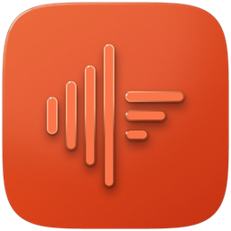

Local, private meeting transcription for your Mac. Record any meeting — Zoom or in-person — and get a plain-text transcript. Nothing ever leaves your machine.
Free · macOS 13+ · Apple Silicon · Notarized by Apple
All releases & notes
Transcription runs on your Mac with whisper.cpp and Metal acceleration. No cloud, no account, no subscription — ever.
Detects when a Zoom meeting starts or ends and offers to start or stop recording, so you never forget to capture one.
Optional spoken announcements tell participants when recording starts and stops, and the menu-bar icon pulses red while capturing.
Optionally turn any transcript into actionable meeting minutes with the bundled Claude Code skill — one click, fully on your terms.